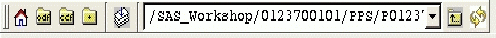

XMM-Newton Science Analysis System
sas (gui-1.52.10) [xmmsas_20170112_1337-16.0.0]
Tool bar
At the top of your browser, you will find a tool bar that is specific to the browser. It allows you to quickly jump through your file system:

- The four left-most buttons navigate you to the pre-selected
Home, ODF, CCF and Current
directories. You can change these directories in the
preferences dialog.
- Next, you will find a selection toggle button. This is only useful
if you are selecting parameters for a task.
Pressing this button will show or hide a window, that lists all currently
selected entries.
- The pull-down menu allows you to quickly jump to a previous
visited item.
- Pressing the next button in the tool bar will jump to a higher level (for
example the parent directory).
- Finally, we have a refresh button. This button allows you to see the new files created during the sas run.
XMM-Newton SOC/SSC -- 2017-01-12